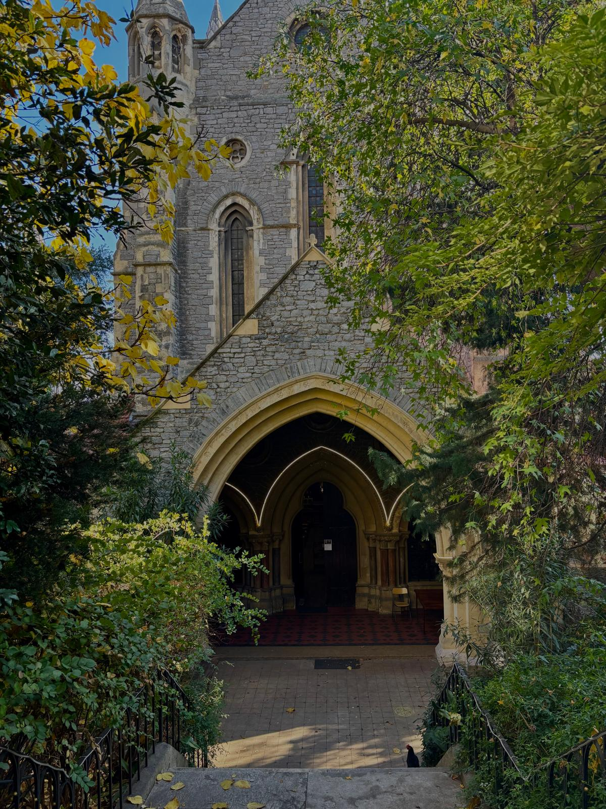
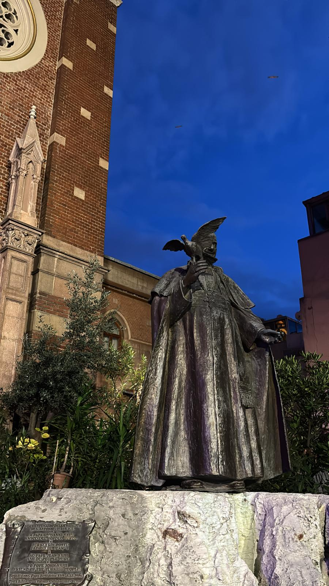
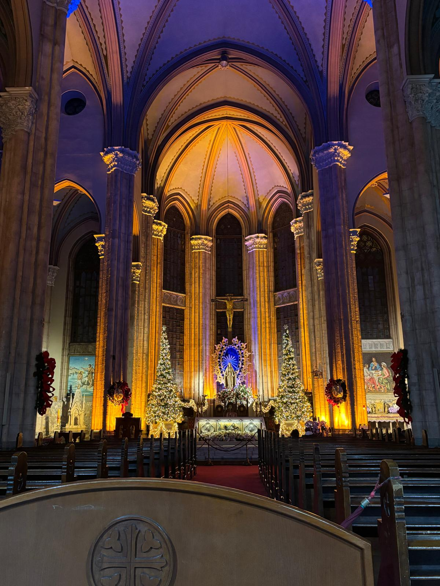
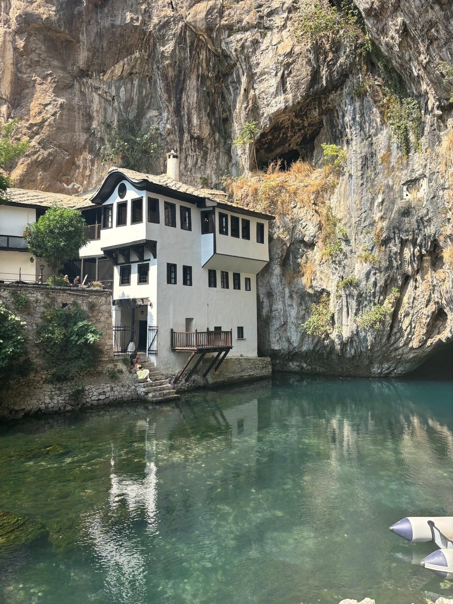
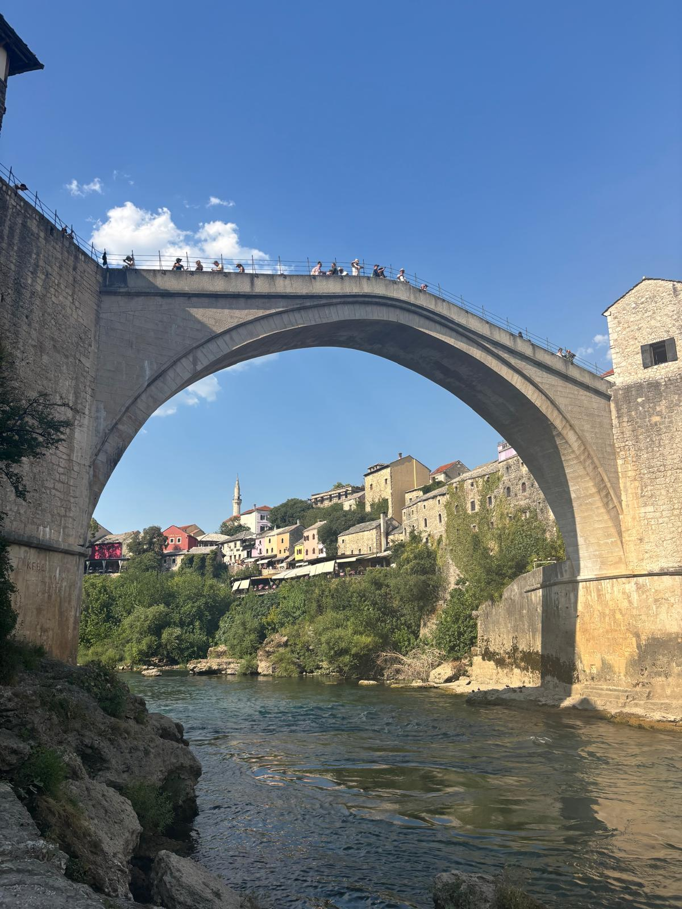
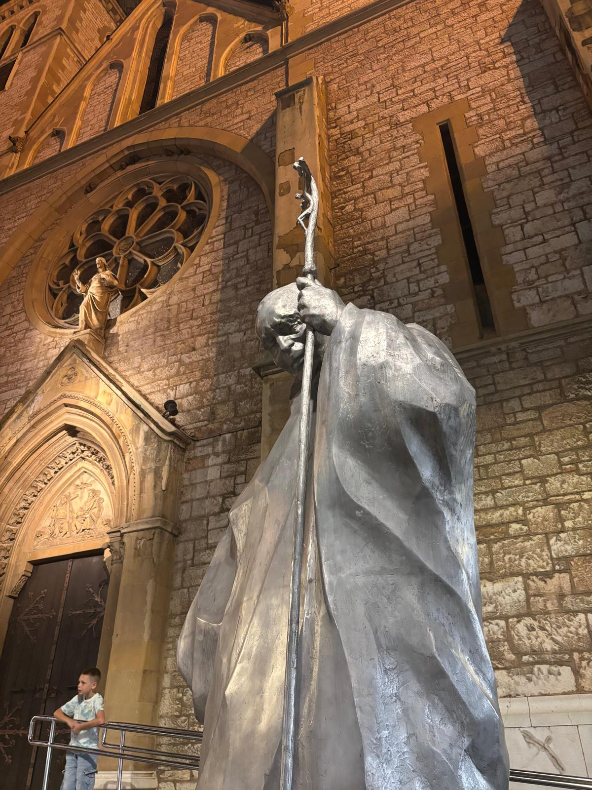
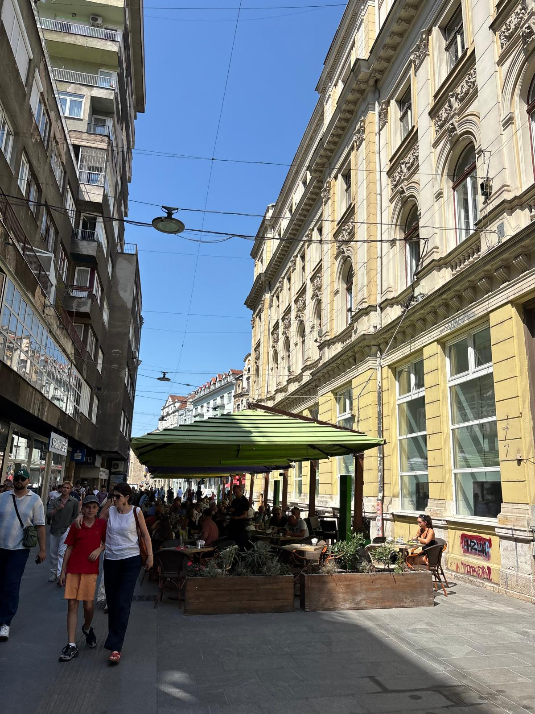

Hakkımda
Zeynep Çelik
Merhaba, ben Zeynep. Mimar Sinan Güzel Sanatlar Üniversitesi’nde mimarlık okuyorum.
Bir yere tasarımdan önce yürüyerek, fotoğraf çekerek ve eski haritalarına bakarak yaklaşmayı seviyorum. Özellikle İstanbul’da, bugün gördüğümüz sokakların ve yapıların geçmişten hangi izleri taşıdığıyla ilgileniyorum.
Bu portfolyoda stüdyo projelerimi, çizimlerimi ve kentte dolaşırken biriktirdiğim fotoğrafları bir araya getiriyorum.
İletişim
Galata




Kuzguncuk


Saraybosna




Amsterdam


Projeler
← HakkımdaKaraköy · Müze tasarımı
Kayıp İstanbul Müzesi

Eski Karaköy Katlı Otoparkı alanında tasarlanan müze, arkeolojik kalıntıları yerinde koruyor. Kalıntıların üzerindeki yaya rotası Maliye Caddesi’nden rıhtıma yöneliyor. Yükseltilen sergi kütlesinin altında kalıntıların görülebildiği kamusal bir alan açılıyor.


Kuzguncuk · Eğitim ve üretim
Kuzguncuk El Sanatları Atölyesi
Üryanizade Sokak’ta yer alan akademi, el sanatları atölyelerini bir avlu çevresinde topluyor. Sergi ve kafe, atölyelerdeki üretimi mahalleyle buluşturuyor.


Bakırköy · Kentsel tasarım
Bakırköy Low-Line
Yeraltı çarşısının dominant ticari yapılarla baskılanması sonucu atıl kalan bölgeyi yeni bir zemin kotu yaratarak yeniden açığa çıkarıp uğrak bir nokta haline getirilmiştir.
Galata · Araştırma ve arşiv
Galata Kent Araştırmaları Enstitüsü
Kuledibi’nde önerilen enstitü, Galata’nın farklı tarihsel katmanlarını araştırmak için arşiv, kütüphane ve kamusal öğrenme mekânlarını sergilerle destekleyerek bir araya getiriyor.
İzmit · Endüstri mirasının dönüşümü
İzmit TÜPRAŞ Dönüşümü
Rafineri alanını kamusal bir parka dönüştüren öneri, mevcut tankları dijital sergi mekânları olarak yeniden kullanıyor. Yağmur suyunu alanda tutan peyzaj, parkın dolaşımını ve açık alanlarını biçimlendiriyor.